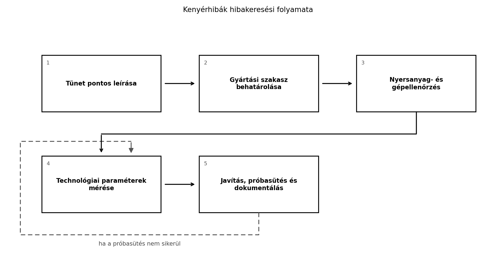

Hajnali műszak végén a pék kinyitja a kemence ajtaját, és a friss kenyerek közül több lapos, szétfolyt, a héjuk sápadt vagy éppen szabálytalanul megrepedt. Az eladótérben vevői reklamáció érkezik: a kenyér belül ragacsos, máshol morzsalékos, az íze savanykás vagy kesernyés. Ilyenkor a pék nem hagyatkozhat megérzésre: a hibát tünetből kiindulva, tervszerűen kell visszavezetnie a nyersanyagra, a tésztakészítésre, a kelesztésre vagy a sütésre, és javító intézkedést kell hoznia. Ebben az alfejezetben a kenyérhibák tüneteit és okait rendszerezzük, hibakeresési táblázatot és eseteket adunk, hogy a tanuló a gyakorlatban gyorsan, élelmiszer-biztonsági és gazdasági szempontból is helyes döntést hozzon.
A kenyérhibák elemzése nem tippelgetés, hanem logikai sorrend. Az alábbi folyamatábra a hibakeresés lépéseit mutatja:

A folyamatábra azt üzeni: először pontosan nevezzük meg a hibát, utána keressük a lehetséges keletkezési szakaszt, majd mérésekkel és ellenőrzésekkel igazoljuk vagy zárjuk ki az okot. Csak ezután szabad megváltoztatni a technológiát. Ha a próbasütés nem hozza a várt eredményt, a visszacsatoló nyíl szerint újra mérünk; minden próbát – a sikerest és a sikertelent is – dokumentálunk.
Definíció. Kenyérhiba minden olyan eltérés, amely a kenyeret a rá vonatkozó minőségi követelménytől, gyártmánylaptól vagy a megfelelően elkészített, jellemző fogyasztói elvárástól eltéríti. A hiba lehet külső (alak-, héjhiba), belső (bélzethiba) vagy érzékszervi (íz-, szaghiba).
Definíció. Hibakeresés annak a tervszerű vizsgálatsorozatnak az összessége, amely a terméken észlelt tünetből kiindulva a lehetséges okok rendszerezett ellenőrzésével azonosítja a hiba forrását, és javító intézkedést rendel hozzá.
Szabály. A hibakeresés során soha ne kezdjünk azonnal a receptúra vagy a gépbeállítás módosításához. Előbb a tünetet pontosan írjuk le, határoljuk be a gyártási szakaszt, ellenőrizzük a nyersanyagot és a gépet, mérjük meg a döntő technológiai paramétereket, és csak ezután változtassunk. A javítás utáni próbasütés és a dokumentálás ugyanolyan fontos, mint maga a vizsgálat.
A kenyérhibákat négy nagy csoportba soroljuk:
A hibák gyakran együtt járnak: a túlkelt tészta lapos és sápadt lehet; a nem eléggé átsült kenyér bélzete ragacsos és íze nyers.
Az alak- és héjhibákat a hibátlan termékkel összevetve ismerjük fel. Az alábbi képtábla közepén a hibátlan referenciakenyér (0) áll; körülötte az alakhibák – lapos, szétfolyt (1), repedt (2), aszimmetrikus (3), beomlott (4) – és a héjhibák – sápadt (5), túlsült (6), hólyagos (7), levált héj (8) – láthatók, mindegyik alatt a leggyakoribb okkal.
A kép csak a tünetet mutatja: ugyanaz a tünet több okból is kialakulhat (a lapos kenyér túl lágy tésztából és túlkelesztésből is), ezért a képről a hibakeresési táblázathoz és a mérésekhez lépünk tovább. A HTML-kiadásban a képekre mutatva megjelenik a táblázat megfelelő sora (ok, ellenőrzés, javítás), a „Melyik ez?” gyakorló pedig tünetleírásból kéri a kép kiválasztását.
A bélzethibák csak metszetben láthatók. Az alábbi képtáblán a hibátlan bélzet (0) mellett a tömör (1), a lyukas (2), a ragacsos, nyers (3), a morzsalékos (4) és a szalonnás (5) bél, valamint a héj alatti üreg (6) látható; a hibás zónát sraffozás jelöli.
A helyzet sokat elárul: a szalonnás sáv az alsó héj fölött van (kevés alsó hő, visszaeső tészta), a ragacsos zóna a bél közepén (alulsütés), a nagy üreg a felső héj alatt (túlkelesztés). A HTML-kiadásban a hibás zóna kiemelése ki-be kapcsolható, a metszetekre mutatva pedig megjelenik a hibakeresési táblázat sora.
Az alábbi táblázat a leggyakoribb kenyérhibák tüneteit, elsődleges okait, ellenőrzési módját és javító intézkedését foglalja össze. A paraméterek tanulási példák, az adott üzemi technológiai lap és gyártói adatlap szerint ellenőrizendők.
| Hiba jele (tünet) | Elsődleges technológiai ok | Nyersanyag- vagy gépi ok | Ellenőrzés módja | Javító intézkedés |
|---|---|---|---|---|
| Lapos, szétfolyt kenyér | Túl lágy tészta, túlkelesztés, alacsony sütőtéri hőmérséklet | Gyenge liszt, kevés só | Tésztakitermelés, kelesztési idő, sütőtéri hőmérséklet mérése | TA csökkentése, kelesztés rövidítése, sütőhő emelése, liszt/só ellenőrzése |
| Repedt, felnyílt héj | Kiszáradt felület, kevés gőz, túl szoros formázás, alulkelesztés | Túl erős liszt | Formázás, gőzölés, kelesztő páratartalma | Kelesztő pára emelése, gőzölés a technológiai lap szerint, formázás mérséklése |
| Sápadt héj | Alacsony sütési hő, rövid idő, túl sok gőz | Kevés cukor, maláta | Sütési hőmérséklet és idő, gőzölés, receptúra | Sütőhő emelése, idő növelése, gőz csökkentése |
| Túlsült, égett héj | Magas sütési hő, hosszú idő, kevés gőz | Sok cukor, tejpor | Sütési hőmérséklet, gőzölés, receptúra | Hőmérséklet csökkentése, idő rövidítése, gőz növelése |
| Hólyagos, levált héj | Forró sütőtér, kiszáradt felület, erős gőz | – | Sütőtér hőeloszlása, kelesztő páratartalma | Hőmérséklet kiegyensúlyozása, páratartalom emelése |
| Tömör bélzet | Elégtelen kelesztés, kemény tészta, hideg tészta | Gyenge liszt, kevés élesztő | Kelesztési idő és hőmérséklet, TA, dagasztás | Kelesztés növelése, TA emelése, liszt/élesztő ellenőrzése |
| Lyukas bélzet | Túlkelesztés, lágy tészta, gyenge formázás | – | Kelesztési idő, TA, formázás | Kelesztés csökkentése, formázás javítása |
| Ragacsos, nyers bélzet | Alacsony sütési hő, rövid idő, nagy darab | – | Sütési idő, maghőmérséklet (pl. 96–98 °C) | Sütési idő növelése, maghőmérséklet ellenőrzése |
| Morzsalékos, száraz bélzet | Kevés víz, túl hosszú dagasztás, lassú sütés | Gyenge liszt | TA, dagasztási idő, sütési paraméterek | TA emelése, dagasztás optimalizálása |
| Szalonnás bélzet | Kevés alsó hő, túl lágy vagy túlkelt, visszaeső tészta, megütött tészta | Hideg sütőfenék vagy lemez, túltöltött kemence | Aljzathő, TA, kelesztési idő, vetés módja | Aljzathő emelése, TA és kelesztés ellenőrzése, óvatos vetés |
| Savanyú íz | Túl sok kovász, hosszú erjedés, meleg kelesztés | – | Kovász mennyisége és érettsége, kelesztési hőmérséklet | Kovász csökkentése, kelesztés hűtése, idő rövidítése |
| Keserű íz | Sok sütőjavító, égett héj, rossz zsiradék | Romlott nyersanyag | Receptúra, sütési hő, nyersanyagvizsgálat | Nyersanyag csere, sütési hő csökkentése |
| Dohos, penészes szag | Penészes nyersanyag, nedves tároló, szennyezett eszköz | Penészes liszt, magvak | Nyersanyag-átvételi jegyzőkönyv, tároló nedvességtartalma | Nyersanyag elutasítása, tároló szárítása, takarítás |
| Élesztős íz | Sok élesztő, hosszú kelesztés, meleg csomagolás | – | Élesztőadag, kelesztési idő, csomagolási hőmérséklet | Élesztő csökkentése, hűlés utáni csomagolás |
Tünet: A reggeli műszakban sütött fehér kenyerek egy része lapos, a héj világos, a bélzet tömör.
Lehetséges okok: (1) túl lágy tészta, (2) túlkelesztés, (3) alacsony sütőtéri hőmérséklet, (4) gyenge liszt.
Ellenőrzés lépései: - A tésztakitermelést a gyártmánylap szerint 158%-nak kell lennie, a műszakban 162%-ot mértek (tanulási példa). Ez túl lágy tésztát okozhat. - A kelesztőkamra hőmérséklete 32 °C helyett 36 °C, a páratartalom 80% helyett 70% (tanulási példa). A meleg, száraz levegő gyorsítja a kelést, de a tészta felülete kiszárad. - A kemence hőmérséklete 220 °C helyett 200 °C (tanulási példa).
Valódi ok: a túl magas tésztakitermelés és a túlkelesztés együttesen.
Javítás: A vízadagolást visszaállítják 158%-ra; a kelesztési időt 10 perccel csökkentik; a kemencét 230 °C-ra felfűtik. A következő sorozat már megfelelő.
Dokumentálás: A hibát és a javító intézkedést a műszaknaplóban rögzítik.
Tünet: A teljes kiőrlésű kenyér alsó harmadában, közvetlenül az alsó héj fölött tömör, nedves, ragacsos, fényes sáv látható. A kenyér teteje normálisan sült.
Lehetséges okok: (1) a sütőtér alja (a sütőfenék) nem elég forró, (2) a tészta túl lágy vagy túlkelt, és a kemencében visszaesett, (3) a tésztát vetéskor megütötték, összenyomták.
Ellenőrzés: A kemence aljzathőmérséklete 190 °C, míg a felső hő 230 °C (tanulási példa): a sütőfenék az előző tétel után nem melegedett vissza. A tésztakitermelés a teljes kiőrlésű liszt miatt 168% (tanulási példa), ami megfelelő; a kelesztési idő a szokásos.
Valódi ok: kevés alsó hő: a kenyér alja lassan melegszik, az alsó bélréteg nem lazul meg és nem szilárdul meg időben, a fölötte lévő tészta súlya összenyomja, és nedves, tömör sáv marad.
Javítás: A sütőfeneket a vetés előtt visszamelegítik, az aljzathőt kb. 230 °C-ra emelik (tanulási példa, ellenőrizendő: kemence gépkönyve, technológiai lap). A következő sütésnél a hiba megszűnik.
Valós eset. Egy kisvárosi pékségben a rozsos kenyerek rendszeresen laposak lettek, és a vevők panaszkodtak a tömör bélzetre. A pék először a kemencére gyanakodott, de a hőmérséklet megfelelő volt. A hibakeresési táblázat alapján a tésztakitermelést ellenőrizte: a rozsliszt arányát tévesen a búzaliszthez képest számolta, és a tényleges TA 165% lett a tervezett 155% helyett (tanulási példa). Emellett a kovász érettségét sem követték nyomon: a savanyú kovász túlérett volt, ami gyengítette a tésztaszerkezetet. A javítás kettős volt: a vízadagolást csökkentették, és a kovász frissítési ciklusát szigorúan rögzítették. A selejt jelentősen csökkent, és a vásárlói reklamációk megszűntek.
Higiénia. A hibás termékeket nem szabad értékesíteni; ha a hiba élelmiszer-biztonsági kockázatot is jelent (pl. penészes szag, nyers bélzet), a terméket el kell különíteni, és a HACCP-terv szerint kell dönteni a megsemmisítésről vagy visszahívásról. HACCP. A nyers bélzet vagy penészes szag esetén a termék nem felel meg az ártalmatlansági követelménynek; a tételt le kell állítani, és a hiba okát dokumentálni kell. Allergén. A kenyérhibák vizsgálatakor az allergén keresztszennyeződésre is gondolni kell: ha a hibás kenyér ugyanazon a vonalon készült, ahol diós vagy szezámmagos termék is, az allergén nyomonkövethetőséget ellenőrizni kell (ellenőrizendő: a pékség allergénkezelési eljárása).
A kenyér minőségét a sütés utáni hűlés után ellenőrizzük. Az alakhibákat szemrevételezéssel, a héj állapotát tapintással és szemrevételezéssel, a bélzetet a kenyér szeletelése után vizsgáljuk. A bélzet akkor megfelelő, ha egyenletesen lazult, rugalmasan visszaalakul, nincs ragacsosság vagy morzsalékonyság, és az alsó héj fölött nincs szalonnás sáv. Az átsültség ellenőrzésére maghőmérőt használunk: a kenyér akkor tekinthető átsültnek, ha a maghőmérséklet eléri a 96–98 °C-ot (ellenőrizendő: üzemi technológiai lap, terméktípusonként eltérő). Az íz- és szaghibákat érzékszervi vizsgálattal, a friss kenyeret kóstolva ellenőrizzük.
A hibás termékeket a minőség-ellenőrzési naplóban rögzíteni kell, és a kivizsgálás eredményét a műszaknaplóba kell vezetni.
1. feladat (A) Sorold fel a kenyérhibák négy fő csoportját, és mindegyikre írj két-két példát!
2. feladat (A) Egy kenyér bélzete ragacsos, a héja világos. Milyen három lehetséges technológiai okot neveznél meg? Melyik gyártási szakaszban (nyersanyag, dagasztás, kelesztés, sütés) keresnéd először?
3. feladat (B) Egy üzemben a rozsos kenyerek rendszeresen repedeznek a tetejükön. A váltásban a következőket mérték: sütőtéri hőmérséklet 240 °C, gőzölés 5 másodperc, a kelesztőkamra páratartalma 65%, a tészta feszesen formázott. Melyik két paraméter a legvalószínűbb hibaforrás, és hogyan javítanád?
4. feladat (B) A táblázat alapján rendeld a következő tüneteket a megfelelő javító intézkedéshez: (a) tömör bélzet, (b) sápadt héj, (c) keserű íz, (d) szalonnás bélzet. Választható intézkedések: 1. sütőtér alsó hőjének emelése, 2. sütőhő emelése, 3. kelesztési idő növelése, 4. rossz zsiradék cseréje. Párosítsd!
5. feladat (C) Egy kenyérsorozatban több darab oldala behorpadt, a héj levált, a bélzet tömör. A pék a kemence hőmérsékletét emelte, de a hiba nem szűnt meg. Mi lehetett a valódi ok, ha a tésztakitermelés 170% volt a tervezett 160% helyett, és a kelesztési idő 20 perccel hosszabb volt a szokásosnál? Indokold a hibakeresési lépések sorrendjében!
6. feladat (D) Tervezz meg egy hibakeresési ellenőrzőlistát egy üzemi műszak számára, amely a reggeli kenyérsütés során fellépő alaki és bélzethibák gyors azonosítására szolgál. A lista legalább 6 ellenőrző pontot tartalmazzon, mindegyiknél a mérendő/ellenőrzendő értékkel és a lehetséges eltéréssel!
1. feladat
A négy csoport: - Alakhibák: lapos, szétfolyt, repedt. - Héjhibák: sápadt, túlsült, hólyagos, levált. - Bélzethibák: tömör, lyukas, ragacsos, morzsalékos, szalonnás. - Íz- és szaghibák: savanyú, keserű, dohos, élesztős.
2. feladat
A ragacsos bélzet és a világos héj elsősorban alacsony sütési hőmérsékletre, rövid sütési időre vagy túl nagy tésztadarabra utal. Először a sütés szakaszát ellenőriznénk (hőmérséklet, idő, maghőmérséklet), mert a tünetek a nem megfelelő átsültségre jellemzőek.
3. feladat
A legvalószínűbb hibaforrás: a kelesztőkamra alacsony páratartalma (65%) és a túl feszes formázás. A 65%-os pára mellett a tészta felülete kiszárad, a feszesre formázott tészta héja a sütés elején korán megmerevedik, és a táguló tészta szétrepeszti. Az 5 másodperces gőzölés a Kemencefelfűtés, vetés, sütési sorrend és gőzölés alfejezet tanulási értékéhez (rozsos kenyérnél kb. 8 s) képest inkább kevés, nem túl sok. Javítás: a kelesztő páratartalmát 75–80%-ra emelni, lazábban formázni, a gőzölést a technológiai lap szerint adni (pl. 8 s; tanulási példa, ellenőrizendő: üzemi technológiai lap).
4. feladat
5. feladat
A hibakeresési lépések: - Tünet: behorpadt oldal, levált héj, tömör bélzet. - A gyártási szakasz: elsősorban a tésztakészítés és a kelesztés. - Nyersanyag- és gépellenőrzés: a liszt és a dagasztógép megfelelő. - Technológiai paraméterek mérése: a TA 170% a tervezett 160% helyett (túl lágy tészta), a kelesztési idő 20 perccel hosszabb (túlkelesztés). - Ebből következően a tészta nem bírja a formáját, a túlkelt tészta héja kiszárad és leválik. A kemence hőmérsékletének emelése önmagában nem oldja meg, mert a tészta szerkezete már hibás. - Javítás: a vízadagolást csökkenteni a tervezett TA-ra, a kelesztési időt visszavenni, és a tésztát feszesebben formázni. Próbasütés után rögzíteni az eredményt.
6. feladat
Példa ellenőrzőlista: 1. Tésztakitermelés (TA) – mért érték a gyártmánylap szerint ±2% tűrés (ellenőrizendő: üzemi technológiai lap). Eltérés: túl lágy vagy túl kemény tészta, alakhiba, tömör bélzet. 2. Kelesztési idő és hőmérséklet – pl. 30–40 perc, 30–34 °C, 75–80% pára (tanulási példa). Eltérés: lapos, repedt, lyukas bélzet. 3. Sütőtéri hőmérséklet – pl. 220–250 °C (tanulási példa). Eltérés: sápadt vagy égett héj, ragacsos bélzet. 4. Maghőmérséklet a sütés végén – 96–98 °C (tanulási példa). Eltérés: nyers, ragacsos bélzet. 5. Gőzölési idő – a technológiai lap szerint, pl. búzakenyérnél kb. 6 s, rozsos kenyérnél kb. 8 s (tanulási példa, ellenőrizendő: üzemi technológiai lap). Eltérés: kevés gőz → repedt, fénytelen héj; túl intenzív gőz forró sütőtérben → hólyagos héj. 6. A kenyér hűlési körülményei – huzatmentes, rácsos hűtő, 1–2 óra (tanulási példa). Eltérés: levált héj, morzsalékos bélzet.
A kenyérhibák négy csoportba sorolhatók: alak-, héj-, bélzet-, valamint íz- és szaghibák. Minden hibát tünetből kiindulva, rendszerezett lépésekkel kell visszavezetni a lehetséges okra: először a tünet pontos leírása, majd a gyártási szakasz behatárolása, a nyersanyag- és gépellenőrzés, a technológiai paraméterek mérése, a javítás és próbasütés, végül a dokumentálás. A leggyakoribb hibák okai a tésztakitermelés, a kelesztési idő/hőmérséklet, a sütési hőmérséklet/gőzölés és a nyersanyagminőség eltérései. A hibakeresési táblázat és az esetek segítenek a gyors, szakszerű döntésben. Az átsültség ellenőrzése (maghőmérséklet) és a penészes nyersanyag kizárása HACCP-szempontból kritikus. A hibát és a javítást mindig dokumentálni kell a műszaknaplóban és a minőség-ellenőrzési naplóban.
Továbbvitt eredmény. A kenyérhiba-keresési lépéssor (tünet → szakasz → nyersanyag/gép → paraméter → javítás → dokumentálás) és a hibatáblázat logikája közvetlenül alkalmazható a péksütemények és finom pékáruk hibáinak vizsgálatára is. Ezt az eredményt használjuk az A péksütemények jellemzése, csoportnormái és vezértermékei és a Péksütemények feldolgozása, kelesztése és sütése a gyakorlatban alfejezetekben, ahol a hasonló hibákat termékcsoportonként elemezzük.
Az alfejezet a sütőipari technológiai, mikrobiológiai és minőség-ellenőrzési alapokra támaszkodik. A hivatkozott élelmiszer-biztonsági keretek – a 178/2002/EK rendelet (élelmiszerjog általános elvei), a 852/2004/EK rendelet (élelmiszer-higiénia, HACCP), az 1169/2011/EU rendelet (allergének és fogyasztói tájékoztatás) és a Magyar Élelmiszerkönyv sütőipari termékekre vonatkozó előírásai – a kiadás előtt ellenőrizendők: a pontos rendeletszámok, szakaszok, az aktuális hatályosság és a konkrét határértékek a hatósági útmutatók szerint. A megadott technológiai paraméterek (TA, hőmérsékletek, idők, maghőmérséklet, gőzölés) tanulási példák, üzemi technológiai lappal és gyártói adatlappal össze kell vetni.